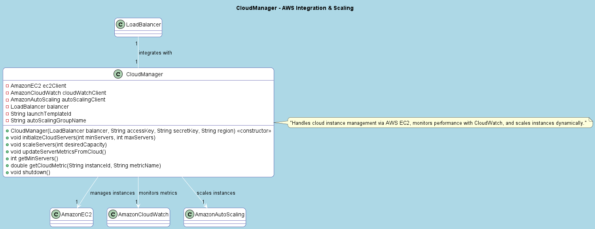

Package core
Class CloudManager
java.lang.Object
core.CloudManager
Manages cloud infrastructure integration with AWS for the LoadBalancer.
This class provides functionality to initialize cloud servers using AWS Auto Scaling,
update server metrics from AWS CloudWatch, scale servers based on load, and shut down
cloud resources. It integrates with the LoadBalancer to manage cloud-based servers.
Key Features:
- Initializes and manages AWS EC2 instances via Auto Scaling.
- Fetches and updates server metrics from AWS CloudWatch.
- Supports dynamic scaling of cloud servers.
- Handles graceful shutdown of cloud resources.
Notes: The `launchTemplateId` and `VPCZoneIdentifier` are hardcoded placeholders and should be replaced with actual AWS values for production use.
UML Diagram:

-
Constructor Summary
ConstructorsConstructorDescriptionCloudManager(LoadBalancer balancer, String accessKey, String secretKey, String region) Constructs a CloudManager with AWS credentials and region configuration. -
Method Summary
Modifier and TypeMethodDescriptiondoublegetCloudMetric(String instanceId, String metricName) Retrieves a specific metric for a given instance from AWS CloudWatch.intRetrieves the minimum number of servers configured in the Auto Scaling Group.voidinitializeCloudServers(int minServers, int maxServers) Initializes cloud servers using AWS Auto Scaling.voidscaleServers(int desiredCapacity) Scales the number of cloud servers to the desired capacity.voidshutdown()Shuts down all cloud resources.voidFetches metrics from AWS CloudWatch and updates server objects in the LoadBalancer.
-
Constructor Details
-
CloudManager
Constructs a CloudManager with AWS credentials and region configuration. Initializes AWS clients (EC2, CloudWatch, AutoScaling) using the provided credentials and sets up the LoadBalancer integration. The `launchTemplateId` and `autoScalingGroupName` are hardcoded placeholders.- Parameters:
balancer- the LoadBalancer instance to integrate withaccessKey- the AWS access key for authenticationsecretKey- the AWS secret key for authenticationregion- the AWS region (e.g., "us-east-1")
-
-
Method Details
-
initializeCloudServers
Initializes cloud servers using AWS Auto Scaling. Creates or updates an Auto Scaling Group with the specified minimum and maximum server counts, waits for instances to launch, and adds running instances to the LoadBalancer. The `launchTemplateId` and `VPCZoneIdentifier` are hardcoded placeholders.- Parameters:
minServers- the minimum number of servers to maintainmaxServers- the maximum number of servers to scale to- Throws:
InterruptedException
-
updateServerMetricsFromCloud
public void updateServerMetricsFromCloud()Fetches metrics from AWS CloudWatch and updates server objects in the LoadBalancer. Retrieves CPU utilization metrics for each server and approximates memory and disk usage. Updates the server's metrics if data points are available.Note: Memory and disk usage are simulated (multiplied by 1.2 and 0.8 from CPU) as CloudWatch requires additional setup for these metrics.
-
scaleServers
public void scaleServers(int desiredCapacity) Scales the number of cloud servers to the desired capacity. Updates the Auto Scaling Group with the specified desired capacity using AWS AutoScaling.- Parameters:
desiredCapacity- the desired number of servers
-
shutdown
public void shutdown()Shuts down all cloud resources. Deletes the Auto Scaling Group and shuts down the EC2, CloudWatch, and AutoScaling clients. -
getMinServers
public int getMinServers()Retrieves the minimum number of servers configured in the Auto Scaling Group.- Returns:
- the minimum number of servers
-
getCloudMetric
Retrieves a specific metric for a given instance from AWS CloudWatch. Queries CloudWatch for the average value of the specified metric over the last 5 minutes.- Parameters:
instanceId- the ID of the EC2 instancemetricName- the name of the metric (e.g., "CPUUtilization")- Returns:
- the average metric value, or 0.0 if no data points are available
-